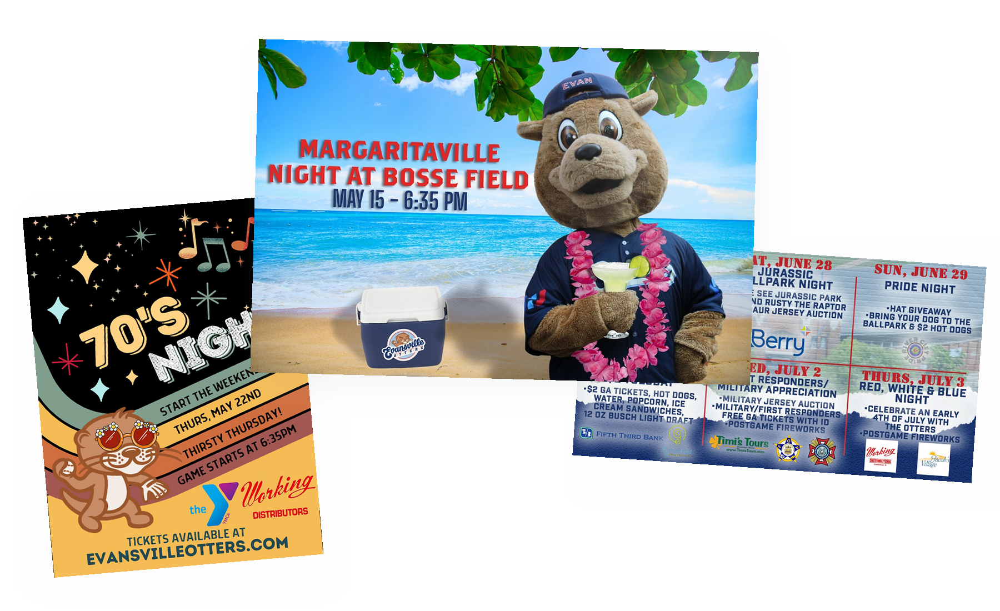
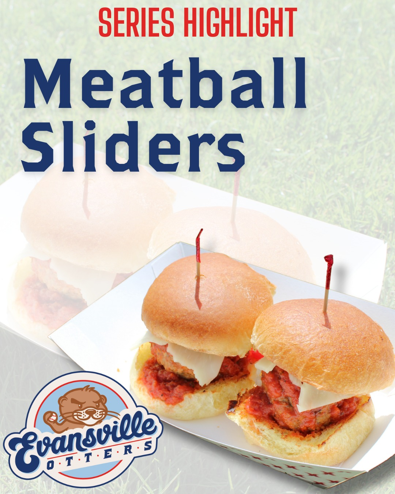
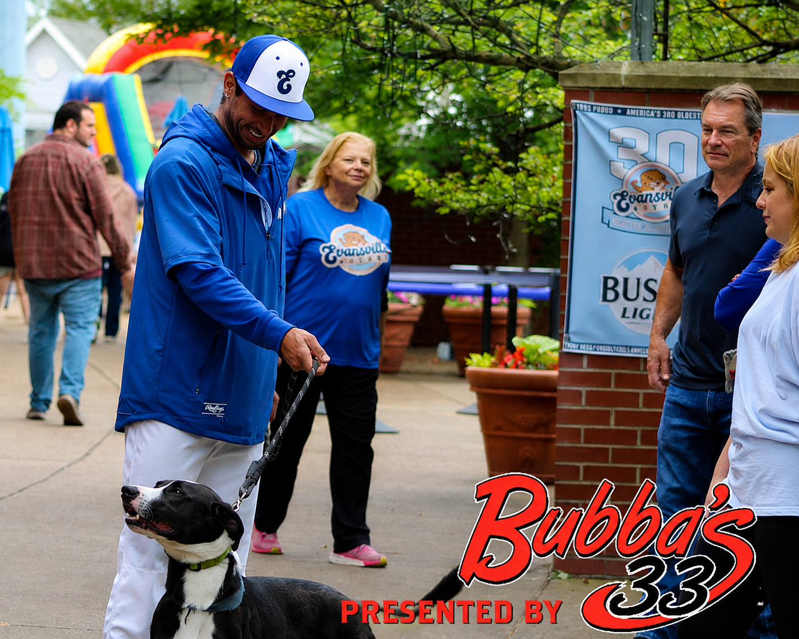
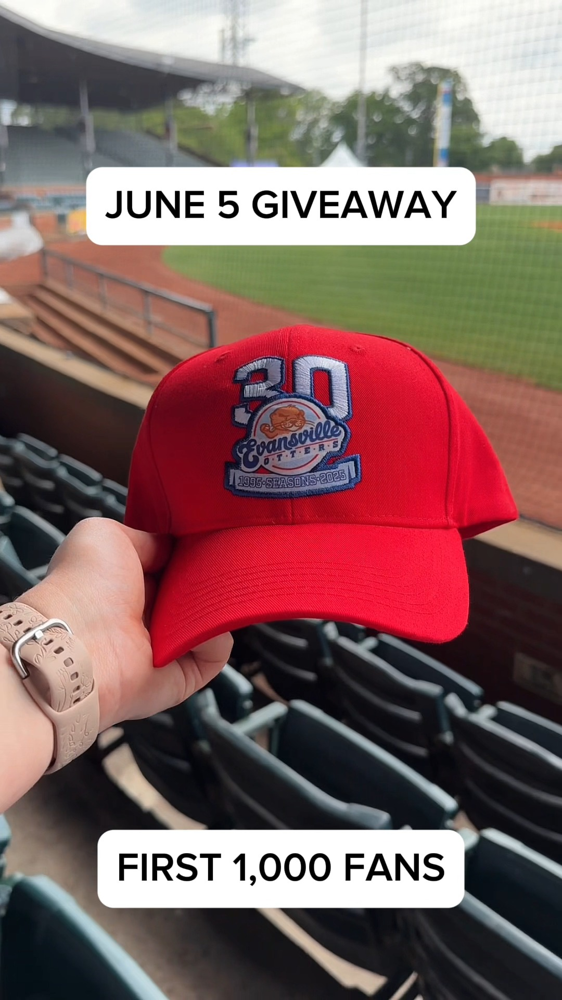

Sports Marketing · Fan Engagement
Creating a fan experience that changed every night.
As Director of Marketing and Community Relations for the Evansville Otters, I helped turn each home game into its own experience by balancing promotion, entertainment, community engagement, content creation, staff management, and live game-day execution.

Every game needed a reason to feel different.
Marketing a professional baseball team meant promoting more than the game itself. Fans were choosing an entire evening out, and each home game needed its own mix of theme, entertainment, promotions, guests, sponsor obligations, social content, and atmosphere.
The biggest challenge was the turnaround. Once one themed game ended, planning for the next was already underway. The goal was to keep each experience fresh while still maintaining consistency across the Otters brand.


The experience started long before first pitch.
Before each game, I wrote the PA script, decorated for the theme, finalized promotional staff schedules, prepared social media content, edited photography, and continued planning future games.
I also coordinated first pitches, national anthem singers, and other on-field guests while making sure advertising contracts and sponsor commitments were fulfilled.
During the game, I shifted into live execution. I managed the Otterbelles, mascot, emcee, and company store, photographed the game, and served as a primary point of communication with the press box.
Content in Real Time
Capturing the game while helping run it.



Between innings mattered too.
Theme nights were selected collaboratively by the front office, but bringing those ideas to life required detailed execution. Each game needed themed entertainment, between-inning promotions, decorations, giveaways, sponsor integration, and supporting content.
That meant translating one central theme into dozens of small moments that made the night feel cohesive for fans in the ballpark.

Some of the best promotions created a bigger connection.
One of my favorite examples was Dog Days. Local shelters brought adoptable dogs to the ballpark, giving the event a community purpose beyond entertainment.
I helped plan animal-themed between-inning promotions, decorations, and supporting game-day elements that made the night fun for fans while giving local shelters and adoptable animals added visibility.
Marketing extended beyond social media and game night.
The role also included advertising across television, radio, digital, and social channels, along with sponsorship activations, community partnerships, player and mascot appearances, and special events.
I also supported broader operational responsibilities including team store management and promotional giveaways, giving me a closer view of how marketing connected directly to attendance, fan experience, and the business side of the organization.


The Impact
Marketing that lived in real time.
Making a complex experience feel effortless to the audience.
This role taught me how much coordination sits behind an experience that feels simple and fun to the audience.
It strengthened my ability to think quickly, manage people and competing priorities, and carry a creative idea all the way through live execution.